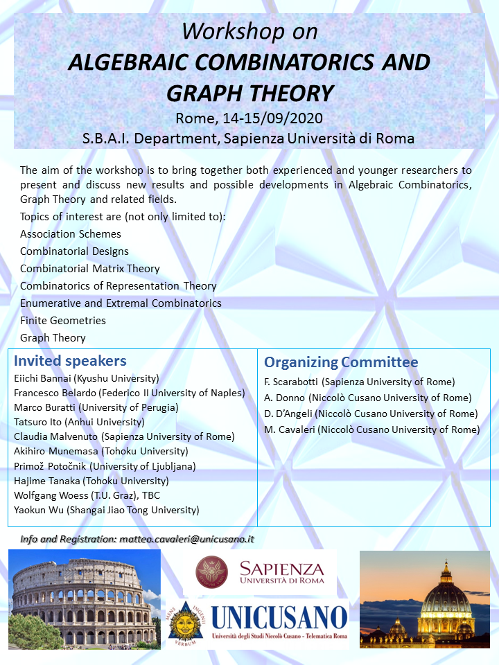

Workshop on
Algebraic Combinatorics and Graph Theory
14–15 September 2020
S.B.A.I. Department, Sapienza Università di Roma

Provisional Poster
The aim of the workshop is to bring together both experienced and younger researchers to present and discuss new results and possible developments in Algebraic Combinatorics, Graph Theory and related fields.
Topics of interest are (not only limited to):
-
Algebraic Graph Theory
-
Combinatorial Designs
-
Combinatorial Matrix Theory
-
Extremal Combinatorics
-
Finite Geometries
-
Spectral Graph Theory
Invited speakers
-
Eiichi Bannai
(Shanghai Jiao Tong University, China)
-
Francesco Belardo
(University Federico II of Naples, Italy)
-
Marco Buratti
(University of Perugia, Italy) TBC
-
Tatsuro Ito
(Anhui University, China)
-
Claudia Malvenuto
(Sapienza University of Rome, Italy)
-
Akihiro Munemasa
(Tohoku University, Japan)
-
Primož Potočnik
(University of Ljubljana, Slovenia)
-
Hajime Tanaka
(Tohoku University, Japan)
-
Wolfgang Woess
(T.U. Graz, Austria) TBC
-
Yaokun Wu
(Shanghai Jiao Tong University)
Organizing Committee
Fabio Scarabotti
(Sapienza University of Rome)
Alfredo Donno
(Niccolò Cusano University of Rome)
Daniele D'Angeli
(Niccolò Cusano University of Rome)
Matteo Cavaleri
(Niccolò Cusano University of Rome)
Registration and Contributed Talks
There is no registration fee.
To register, please send a mail with subject matter "ACGT2020" to the address matteo.cavaleri(at)unicusano.it including name, surname, academic institution, as well as the planned duration of the stay.
Participants to the Workshop may ask to give a contributed talk of 20 minutes on topics relevant for the conference.
Interested people should submit a short abstract by 30 June 2020 to the same address.
Acceptance will be confirmed within 15 July 2020.
Participants
Registered participants: full list
Program and Abstracts
- Preliminary Schedule: PDF
- List of Abstracts: PDF
- The conference dinner is planned on Monday 14th September.
Location
Dipartimento S.B.A.I. - Sapienza Università di Roma
Via Antonio Scarpa, 14 00161 Roma, Italia
How to get the Building B (RM002) where the meeting takes place (Aula 1B1):
local map.
If you take the subway, the closest station is Policlinico (Line B).
From Termini train station, take bus 310 and get off at viale Ippocrate.
From Fiumicino and Ciampino Airport you can reach Stazione Termini
by train or shuttle bus.
Accommodation
Participants are kindly asked to take care of accommodation by themselves.
We suggest the following two Hotels:
The workshop is generously supported by:
last modified: 14 February 2020